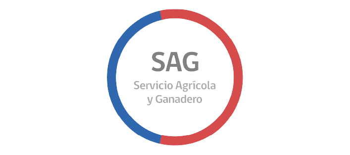
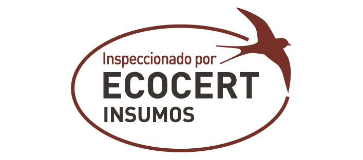
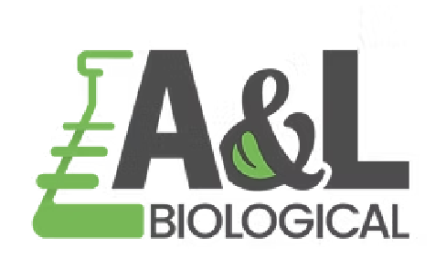
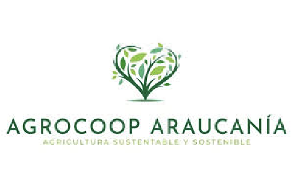
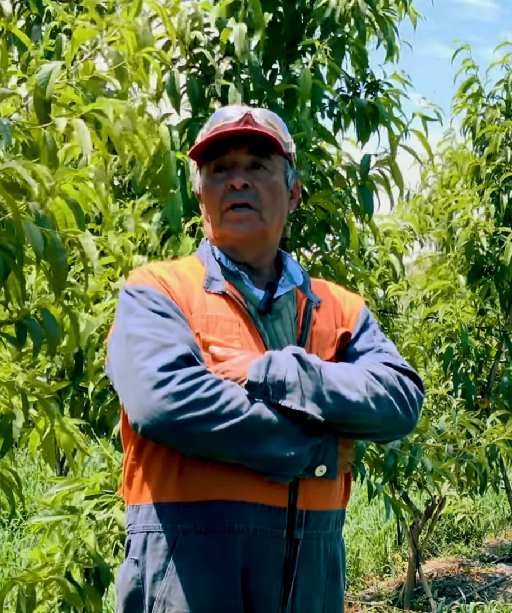
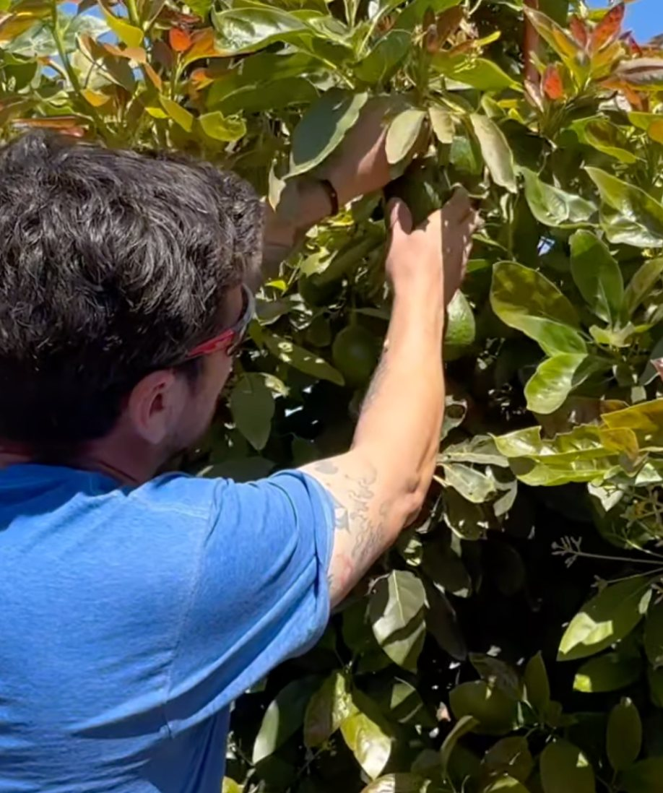
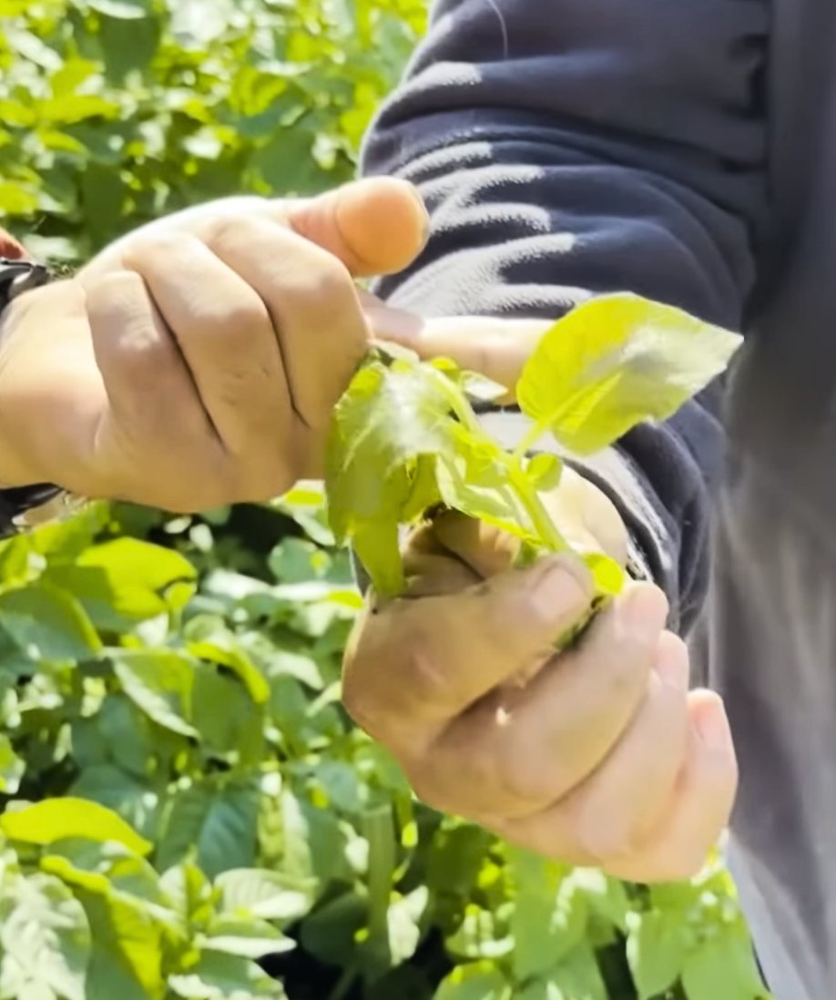
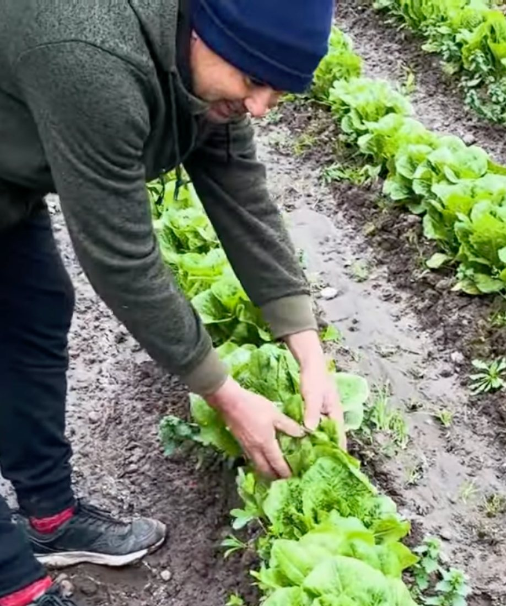

Pewman Innovation desarrolla soluciones basadas en bionanotecnología y microorganismos de ambientes extremos, ayudando a enfrentar el cambio climático, optimizar el uso del agua y mejorar los cultivos. Estos son los resultados validados en campo.




Agricultores de Chile cuentan sus resultados con Crioprotect y Nanoforte. Haz clic para ver el video.

Compartió su experiencia usando Nanoforte en su campo de duraznos nectarín.
Ver videoAumento de producción en kiwis tras la aplicación de Crioprotect.
Ver video
Aplicación de Crioprotect antiheladas en paltos de la V Región.
Ver video
6 heladas consecutivas de −2 a −3°C sin sufrir daños significativos.
Ver video
Ensayo aplicando Crioprotect en un cuartel de Chardonnay expuesto a heladas.
Ver video
En solo 7 días vio los resultados de Nanoforte en sus lechugas y coliflores.
Ver videoResultados validados en distintos cultivos y regiones. Haz clic para ver el informe técnico y descargarlo.


Conversa con nuestro equipo y arma la estrategia ideal para proteger y potenciar tu cultivo esta temporada.